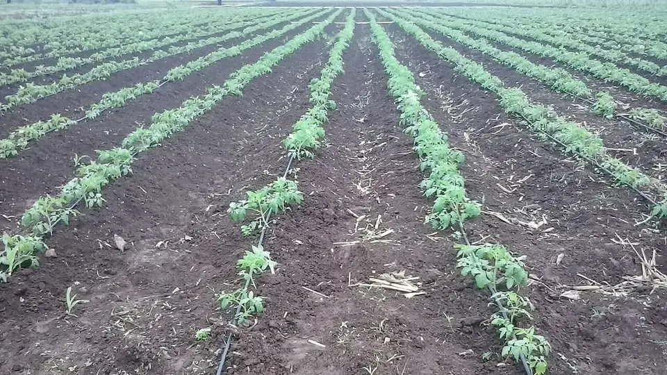

ई-पीक पाहणी — DCS MH ऐप से फसल नोंदणी
E-Pik Pahani 2026 — Registering Your Crop on the DCS MH App
7/12 पर फसल दर्ज नहीं, तो काग़ज़ पर उस साल आपके खेत में फसल थी ही नहीं — और बीमा क्लेम वहीं ख़ारिज हो जाता है। खरीफ़ 2026 से यह नोंद नए DCS MH ऐप से करनी है।
✍️ Kunal Rajput — KrashiMitra⏱️ 9 मिनट पढ़ें📅 अगस्त 2026

गोंदेगाव, महाराष्ट्र का खेत — ई-पीक पाहणी में इसी खड़ी फसल की फ़ोटो खेत में खड़े होकर दर्ज करनी होती है।
दस मिनट की नोंद जिस पर पूरे मौसम का बीमा टिका है
📱
DCS MH
2026 का नया ऐप
📅
15 जुलाई
खरीफ़ 2026 से शुरू
❌
क्लेम
नोंद बिना अटक जाता है
📖
भूमिका
खेत में सोयाबीन खड़ी है, बीमा भी भरा है, बारिश ने फसल भी मार दी — और मुआवज़ा फिर भी नहीं मिला। वजह अक्सर एक ही निकलती है: 7/12 पर उस साल की फसल दर्ज ही नहीं थी। महाराष्ट्र में यह दर्ज करने का काम अब सरकारी बाबू नहीं, किसान ख़ुद अपने मोबाइल से करता है — इसी को ई-पीक पाहणी कहते हैं।
और 2026 के खरीफ़ से इसमें बड़ा बदलाव हुआ है — पुराना “E-Peek Pahani” ऐप हटकर अब केंद्र के डिजिटल क्रॉप सर्वे (DCS) वाला “DCS MH” ऐप इस्तेमाल हो रहा है, जो 15 जुलाई 2026 से चालू है। इस लेख में — यह होता क्या है, कब तक करनी है, मोबाइल से कैसे करें, और न करने पर असल में क्या-क्या रुक जाता है — सब आसान हिंदी में।
विज्ञापन
🔍
ई-पीक पाहणी है क्या?
महाराष्ट्र में हर खेत का एक रिकॉर्ड होता है — 7/12 उतारा। उसमें ज़मीन किसकी है, यह तो लिखा ही रहता है; साथ में यह भी लिखा जाता है कि इस मौसम में इस खेत पर कौन-सी फसल खड़ी है। पहले यह काम तलाठी घूम-घूमकर करता था, इसलिए बहुत सारी नोंद या तो अधूरी रहती थी या अंदाज़ से भर दी जाती थी।
ई-पीक पाहणी ने यह ज़िम्मेदारी किसान को दे दी — आप अपने खेत में खड़े होकर, फ़सल की फ़ोटो खींचकर, ऐप में दर्ज करते हैं। ऐप फ़ोटो के साथ GPS लोकेशन भी उठा लेता है, इसलिए यह साबित हो जाता है कि फ़ोटो उसी गट नंबर के खेत की है।
💡
यह “एक और सरकारी फ़ॉर्म” नहीं है। यही वह एक नोंद है जिससे आगे चलकर पीक विमा का क्लेम, नुकसान भरपाई, MSP पर खरीद और फसल कर्ज़ — चारों जुड़े हुए हैं। नोंद नहीं, तो काग़ज़ पर आपके खेत में उस साल कोई फसल थी ही नहीं।
🔄
2026 में क्या बदला — पुराना ऐप बनाम DCS MH
केंद्र सरकार की अॅग्रीस्टॅक (AgriStack) योजना के तहत पूरे देश में एक ही डिजिटल क्रॉप सर्वे चलाया जा रहा है। महाराष्ट्र भी उसी में शामिल हो गया है, इसलिए राज्य का पुराना ऐप बदल गया।
बिंदु
पहले (E-Peek Pahani ऐप)
अब (DCS MH ऐप)
ऐप का नाम
E-Peek Pahani (DCS)
DCS MH
किसके तहत
राज्य महसूल विभाग
केंद्र का डिजिटल क्रॉप सर्वे / AgriStack
पहचान
मोबाइल नंबर आधारित खाता
फार्मर ID / आधार से जुड़ी पहचान
पड़ताल (verification)
नमूना जाँच
नोंदों की सौ फ़ीसदी पड़ताल का लक्ष्य
सहायक की भूमिका
सीमित
गाँव-स्तर पर नियुक्त सहाय्यक भी नोंद कर सकते हैं
खरीफ़ 2026 में शुरू
—
15 जुलाई 2026 से
⚠️
पुराने ऐप में लॉगिन करके इंतज़ार मत करते रहिए — इस खरीफ़ की नोंद DCS MH से ही मानी जाएगी। प्ले स्टोर पर ऐप का नाम और डेवलपर ध्यान से मिलाएँ; मिलती-जुलती नक़ली ऐप्स भी मिलती हैं। पक्की जानकारी अपने तलाठी या कृषि सहायक से लें।
विज्ञापन
🪜
दो स्तर — शेतकरी स्तर और सहाय्यक/तलाठी स्तर
हर मौसम की पाहणी दो चरणों में होती है, और यही बात सबसे ज़्यादा किसानों को उलझाती है।
शेतकरी स्तर (पहला चरण): किसान ख़ुद ऐप से अपनी फसल दर्ज करता है। यह विंडो पहले खुलती है और सीमित दिनों की होती है।
सहाय्यक / तलाठी स्तर (दूसरा चरण): जो खेत पहले चरण में छूट गए, उन्हें गाँव का नियुक्त सहाय्यक या तलाठी दर्ज करता है, और पहले चरण की नोंदों की पड़ताल भी इसी में होती है।
पहले चरण में ख़ुद करना क्यों बेहतर है? क्योंकि तब फसल, क्षेत्रफल और सिंचाई का ब्योरा वही दर्ज होता है जो असल में खेत में है। दूसरे चरण में यह काम किसी और के भरोसे चला जाता है, और वहीं “कपास की जगह ज्वारी” जैसी ग़लत नोंद बैठ जाती है — जिसे बाद में सुधारना बहुत मुश्किल होता है।
📅
तीनों मौसमों की पाहणी अलग-अलग होती है — खरीफ़, रबी और उन्हाळी (गर्मी)। एक बार कर देने से पूरे साल का काम नहीं हो जाता। हर मौसम में फिर से दर्ज करनी पड़ती है।
अपना खाता बनाएँ: मोबाइल नंबर और आधार से जुड़ी पहचान डालकर रजिस्ट्रेशन पूरा करें। एक ही मोबाइल से परिवार के कई खातेदार जोड़े जा सकते हैं।
गाँव और खाता चुनें: ज़िला → तालुका → गाँव चुनकर अपना खाता क्रमांक या गट नंबर चुनें। स्क्रीन पर 7/12 का ब्योरा दिखेगा — नाम और क्षेत्रफल मिलाकर देखें।
फसल का ब्योरा भरें: मौसम (खरीफ़/रबी/उन्हाळी), फसल का नाम, कितने क्षेत्र पर है, जिरायत या बागायत, और सिंचाई का साधन — सब सही भरें।
खेत में खड़े होकर फ़ोटो लें: यह सबसे अहम कदम है। ऐप GPS से लोकेशन उठाता है, इसलिए फ़ोटो उसी खेत में खड़े होकर ही लेनी है — घर बैठकर ली गई फ़ोटो अटक सकती है।
अपलोड करें और पावती सहेजें: जमा करने के बाद मिलने वाला नोंद क्रमांक या स्क्रीनशॉट ज़रूर सहेजें — क्लेम के समय यही आपका सबूत है।
बाद में सत्यापित करें: कुछ दिनों बाद अपने 7/12 उतारे पर देखें कि दर्ज फसल वही है जो आपने भरी थी।
⚠️
नेटवर्क कमज़ोर हो तो ऐप में फ़ोटो और ब्योरा ऑफ़लाइन सहेज लें और गाँव लौटकर अपलोड करें। “ड्राफ़्ट” में पड़ी नोंद, दर्ज नोंद नहीं होती — अपलोड होने की पुष्टि देखे बिना ऐप बंद न करें।
💸
नोंद न की तो असल में क्या-क्या रुकता है
काम
✅ पाहणी की है
❌ पाहणी नहीं की
पीक विमा (फसल बीमा) क्लेम
7/12 की नोंद से फसल साबित, क्लेम आगे बढ़ता है
काग़ज़ पर फसल ही नहीं — क्लेम अटक या ख़ारिज
प्राकृतिक आपदा की नुकसान भरपाई
पंचनामा नोंद से मिलाया जाता है
सूची में नाम आना मुश्किल
MSP / हमीभाव पर सरकारी खरीद
रकबे के हिसाब से खरीद की सीमा तय
पंजीकरण के समय रकबा साबित नहीं होता
फसल कर्ज़ और KCC
बैंक को खड़ी फसल का प्रमाण मिलता है
कर्ज़ की सीमा तय करने में अड़चन
कृषि योजनाओं का लाभ
फसल-आधारित अनुदान में पात्रता बनती है
कई अनुदानों में आवेदन ही नहीं बनता
ध्यान दीजिए — इनमें से कोई भी नुक़सान पाहणी के दिन नहीं दिखता। दिखता है छह महीने बाद, जब बारिश फसल ले जा चुकी होती है और क्लेम की फ़ाइल पर “पीक नोंद नाही” लिख दिया जाता है। तब सुधार का कोई रास्ता नहीं बचता।
🚫
ये गलतियाँ कभी न करें
घर बैठे फ़ोटो लेना — ऐप GPS पढ़ता है। खेत से दूर ली गई फ़ोटो पड़ताल में अटक सकती है।
मिश्र पीक को एक ही फसल दिखाना — कपास + तूर या सोयाबीन + तूर लगाई है तो मिश्र पीक ही चुनें और दोनों का हिस्सा भरें। एक ही फसल दिखाने पर क्लेम में रकबा गड़बड़ा जाता है।
जिरायत को बागायत या उल्टा भरना — यह सीधे बीमा की इकाई और मुआवज़े की दर पर असर डालता है।
पहला चरण छोड़कर सहाय्यक के भरोसे रहना — तब नोंद किसी और के अंदाज़ से बैठती है, और सुधार का मौक़ा हाथ से निकल जाता है।
पावती न सहेजना — नोंद क्रमांक या स्क्रीनशॉट न हो तो बाद में यह साबित करना मुश्किल है कि आपने समय पर नोंद की थी।
यह मान लेना कि साल में एक बार बस है — खरीफ़, रबी और उन्हाळी, तीनों की नोंद अलग-अलग करनी पड़ती है।
बिना जाँचे मान लेना कि नोंद चढ़ गई — कुछ दिन बाद 7/12 पर जाकर देखिए कि दर्ज फसल वही है जो आपने भरी थी।
🗓️
तीनों मौसम — कब क्या करना है
मौसम
फसलें
नोंद का समय
खरीफ़
सोयाबीन, कपास, तूर, मक्का, धान, बाजरी
बुवाई के बाद, फसल खड़ी होते ही — 2026 में 15 जुलाई से शुरू
रबी
ज्वारी (शाळू), गेहूँ, हरभरा, कांदा
बुवाई के बाद, आमतौर पर दिसंबर–जनवरी की विंडो में
उन्हाळी (गर्मी)
उन्हाळी भुईमूग, तिल, चारा-फसलें, भाजीपाला
गर्मी की फसल खड़ी होने पर, अलग विंडो में
बहुवार्षिक फसल
ऊस, केळी, डाळिंब, द्राक्ष, संत्रा
पहली बार दर्ज करने के बाद नियम के अनुसार दोहराएँ — तलाठी से पुष्टि करें
⚠️
हर मौसम की सही-सही तारीख़ें राज्य सरकार हर साल अलग से घोषित करती है और उनमें मुदतवाढ़ (extension) भी मिलती रहती है। ऊपर की तालिका को ढाँचा मानिए। अंतिम तारीख़ हमेशा DCS MH ऐप की सूचना या अपने तलाठी कार्यालय से ही पक्की करें।
✅
निष्कर्ष
तीन बातें याद रखिए। पहली — खरीफ़ 2026 की नोंद DCS MH ऐप से ही होगी, पुराना ऐप अब चलन में नहीं है। दूसरी — पहले चरण में ख़ुद नोंद कीजिए, खेत में खड़े होकर, सही फसल और सही रकबे के साथ। तीसरी — पावती सहेजिए और 7/12 पर जाकर मिलान कीजिए; बीमा क्लेम के दिन वही काम आएगी।
दस मिनट की एक नोंद, और पूरे मौसम की फसल काग़ज़ पर सुरक्षित।
⚠️
ऐप के नाम, तारीख़ें और प्रक्रिया सरकारी निर्णयों से बदलती रहती हैं। अंतिम जानकारी अपने तलाठी कार्यालय, कृषि सहायक या ई-पीक पाहणी सहाय्यक से ही पक्की करें। कृषि मित्र कोई सरकारी एजेंसी नहीं है और न ही किसी की ओर से नोंद करता है।
विज्ञापन
❓
अक्सर पूछे जाने वाले सवाल
1ई-पीक पाहणी 2026 के लिए कौन सा ऐप डाउनलोड करें?
खरीफ़ 2026 से महाराष्ट्र में ई-पीक पाहणी “DCS MH” ऐप से करनी है, जो 15 जुलाई 2026 से चालू हुआ है। यह केंद्र सरकार के डिजिटल क्रॉप सर्वे (AgriStack) के तहत आता है और इसने पुराने E-Peek Pahani ऐप की जगह ली है।
2ई-पीक पाहणी नहीं की तो क्या होगा?
फसल 7/12 पर दर्ज नहीं होगी, और इससे पीक विमा का क्लेम, प्राकृतिक आपदा की नुकसान भरपाई, MSP पर सरकारी खरीद और फसल कर्ज़ — चारों अटक सकते हैं। सबसे बड़ी दिक्कत यह है कि यह नुक़सान क्लेम के समय पता चलता है, जब सुधार का समय निकल चुका होता है।
3ई-पीक पाहणी घर बैठे कर सकते हैं क्या?
नहीं। ऐप फ़ोटो के साथ GPS लोकेशन भी उठाता है, इसलिए फ़ोटो उसी खेत में खड़े होकर लेनी पड़ती है जिसका गट नंबर आपने चुना है। घर से ली गई फ़ोटो पड़ताल में अटक सकती है। हाँ, नेटवर्क न हो तो ब्योरा ऑफ़लाइन सहेजकर गाँव लौटकर अपलोड किया जा सकता है।
4शेतकरी स्तर और तलाठी स्तर में क्या फर्क है?
शेतकरी स्तर पहला चरण है, जिसमें किसान ख़ुद ऐप से फसल दर्ज करता है। सहाय्यक/तलाठी स्तर दूसरा चरण है, जिसमें छूटे हुए खेत दर्ज होते हैं और पहले चरण की नोंदों की पड़ताल होती है। पहले चरण में ख़ुद करना बेहतर है, क्योंकि तभी फसल और रकबा आपके हिसाब से दर्ज होता है।
5एक ही खेत में दो फसलें हों तो ई-पीक पाहणी में कैसे भरें?
ऐप में “मिश्र पीक” (मिश्रित फसल) का विकल्प चुनिए और दोनों फसलों का हिस्सा अलग-अलग भरिए — जैसे कपास + तूर या सोयाबीन + तूर। सिर्फ़ एक फसल दिखाने पर क्लेम के समय रकबा गड़बड़ा जाता है और मुआवज़ा कम बैठता है।
6क्या ई-पीक पाहणी साल में एक बार करनी होती है?
नहीं, हर मौसम में अलग से करनी होती है — खरीफ़, रबी और उन्हाळी, तीनों की नोंद अलग है। एक मौसम की नोंद अगले मौसम में काम नहीं आती, क्योंकि 7/12 पर हर मौसम की फसल अलग दर्ज होती है।
7ई-पीक पाहणी में गलत फसल दर्ज हो गई तो क्या करें?
जब तक शेतकरी स्तर की विंडो खुली है, ऐप में ही नोंद सुधारी जा सकती है — इसलिए जमा करने के बाद तुरंत जाँच लें। विंडो बंद होने के बाद सुधार के लिए तलाठी कार्यालय जाना पड़ता है, और वहाँ सुधार मिलना मुश्किल होता है। इसीलिए पावती और स्क्रीनशॉट सहेजकर रखें।
8ई-पीक पाहणी करने के लिए कोई फीस लगती है क्या?
नहीं, यह पूरी तरह मुफ़्त है। किसान अपने मोबाइल से ख़ुद कर सकता है और इसके लिए किसी एजेंट को पैसे देने की ज़रूरत नहीं। गाँव में नियुक्त सहाय्यक भी नोंद करते हैं, पर उसका मानधन सरकार देती है — किसान से नहीं लिया जाता।
🌾
KrashiMitra.in — आपका विश्वसनीय कृषि साथी
मंडी भाव, सरकारी योजनाएं, बीज-खाद की जानकारी और फसल रोग उपचार — सब कुछ हिंदी में।